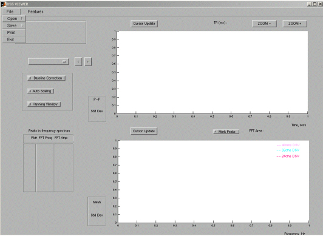
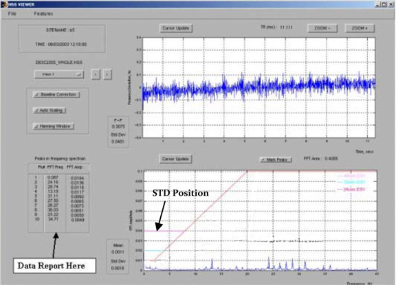
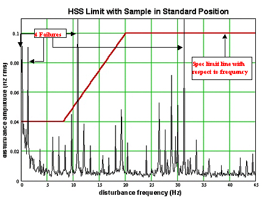
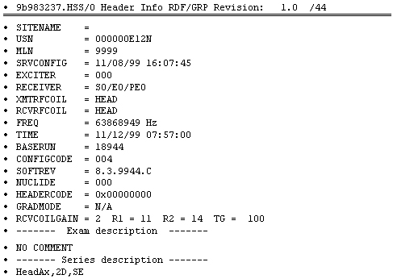
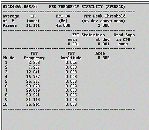

Proprietary to General Electric Company
Direction 5440000, Rev# 5
Signa HDxt Service Methods
Module Version 5.0, Version Date 7/16/10
Proprietary to General Electric Company |
High Speed Stability (HSS) plot and data results should be viewed using the HSS Viewer. This provides many ways to view the results. This is described in Section 1, Viewing Results with HSS Viewer. See Section 2, HSS Limits, concerning understanding if the results meet the specification or not. The results can also be reported with both graphics and text using the Report Manager tool, which is located under Utilities from the MR Service Desktop.
The HSS Viewer starts automatically after the execution of the HSS Tool is finished. The HSS Viewer can also be started manually. See Illustration 1.
Illustration 1: Manually Starting HSS Viewer

Select [File], [Open], and then select the desired file from the list. See Illustration 2.
The results can be read from the bottom-most window. Note the three limit lines visible on the plot. Ensure that none of the peaks from the plot extend beyond the red 24 cms DSV limit line. See Illustration 3.
The results can also be compared to other HSS data sets using the Compare function under [Features]. See Illustration 4.
Explanations of the various options can be found under the [Help] menu at the top of the HSS Viewer GUI.
Illustration 2: HSS Viewer File Selection

Illustration 3: Viewing Plots Using HSS Viewer

Illustration 4: Compare Screen

Table 1 lists the frequency limits for fixed-point stability for the 45Hz (vibration) bandwidth mode. At present, there are no specs for the 250Hz (electrical) bandwidth mode. Illustration 5 shows the allowable instability in the MR frequency, given the limits on the amplitude of the frequency components in a Fourier transform of (x1,y1,z1,t) for the 45Hz bandwidth mode.
Table 1: Frequency Limits For Fixed Point Stability (45HZ BW Mode Only)
| Frequency Deviation Limits For Fixed Point Stability (45Hz BW Mode) | Frequency Dev. (p-p) | Units |
| Frequency instability (p-p) Standard Position | 0.7 p-p | Hz |
HSS Area Measurement Specification: Standard Position 45 Hz BW Mode. The upper limit is 1.2 for CERD, UCERD2, EXCITE and 1.9 for UCERD.
| NOTE: | Illustration 5 is to be used for low-frequency (45Hz) bandwidth tests only (Standard Position). |
Illustration 5: System Stability With Respect To Frequency (45HZ BW Mode Only)

Scan Header (Refer to Table 2 for a description of the items in the scan header):
Illustration 6: Scan Header

Table 2: Header Parameters Description
| Parameter | Legal Values | Source |
| SITENAME | SITE NAME | RAW HEADER |
USN | UNIQUE SYSTEM NUMBER (GECARES ISSUED) | Host.cfg FILE |
MLN | MOBILE LOCATION NUMBER (9999 = NON-MOBIL) | Mrconfig.cfg FILE |
SRVCONFIG | DATE/TIME MRCONFIG FILE LAST CHANGED | Mrconfig.cfg FILE |
EXCITER | (NOT USED) | (NONE) |
RECEIVER | STARTING RCVR #, ENDING RCVR #, PORT ENABLE # | SCAN Rx; Mrconfig.cfg FILE |
XMTRFCOIL | BODY, HEAD | RAW HEADER |
RCVRFCOIL | BODY, HEAD, <SURFACE COIL NAME> | RAW HEADER |
FREQ | MAGNET FREQUENCY | RAW HEADER |
TIME | YY/MM/DD HH:MM:SS | RAW HEADER |
BASERUN | BASE RUN NUMBER OF SCAN | RAW HEADER |
CONFIGCODE | (NOT USED) | (NONE) |
SOFTREV | SOFTWARE REVISION | “mrswrev” SCRIPT |
NUCLIDE | (NOT USED) | (NONE) |
HEADERCODE | ERROR # IF PROBLEM CREATING THIS TEST HEADER | CREATED BY TEST ANALYSIS |
REVCOILGAIN | CALIBRATION VALUE (TYP. 1-10) | CoilConfig.cfg FILE |
R1, R2, TG | 1-13, 1-15, 0-200 | RAW HEADER |
Exam “Comments” | UP TO 32 CHARACTERS FROM EXAM DESCRIPTION | IMAGE HEADER |
Series “Comments” | UP TO 29 CHARACTERS FROM SERIES DESCRIPTION | IMAGE HEADER |
Refer to Illustration 7 and Illustration 8 for a “typical” HSS average plot and data displayed in the Report Manager tool.
Illustration 7: Average Data Display

Illustration 8: Plot Display For Average HSS

This section describes the action executed after selecting a feature in the HSS Viewer.
The following table describes HSS menu selections.
| Menu Selection | Result |
| File > Open > HSS Files | Opens a file selection box that allows the user to select an HSS file located in any directory in the system. |
| File > Open > Header Information | Opens the Header Information associated with the current HSS file in a separate window. |
| File > Open > Service Config File | Opens the Service Config File associated with the current HSS file in a separate window. |
| File > Save > Saves data in PL Format | Saves HSS file data in PL format. |
| File > Save > Capture Window as JPG | Allows the user to save the Full GUI Window as a JPG in a desired location. |
| File > Save > Copy Time and Frequency Plots | Allows the user to copy the time and frequency plots as separate JPGs in a desired location. |
| File > Print | Allows the user to select the printer and print the current GUI window. |
| File > Exit | Closes HSS Viewer. |
| Features > Compare Mode | Opens the Compare Mode (new GUI). |
The following table describes elements of the HSS user interface.
| User Interface | Description |
| Pass Selection Menu | Allows the user to view data corresponding to any pass, average spectrum and concatenated data of all passes. |
| Baseline Correction | Removes wandering Baseline. Low frequency oscillations in the HSS time data are removed. |
| Auto-Scaling | Scales the plot in the Time windows such that the maximum and minimum values of the data displayed are the limits of the Y-axis. Scales the plot in the Frequency window such that zero and the maximum value in the data displayed are the limits of the Y-axis. |
| Hanning Window | The data displayed in the time window is multiplied with a hanning window of equal size and the result is displayed as the Time data. The Fourier transform of this time data is displayed as the frequency spectrum in the frequency window. |
| Cursor Update | Clicking the cursor above the corresponding plot window, activates
the cursor update mode for that particular window. The first click
in the window creates a red * sign in the middle of the window. X-Y
values denoting the location of the point in appropriate units are
displayed next to the Cursor Update button. Performing a
|
| Zoom + | Selection of this option allows the user to draw a rectangle in the time axis. The time window then displays only the data inside the rectangle. Data is not chopped in the Y direction. The frequency spectrum of the data displayed in the time plot window is computed and displayed in the frequency plot window. |
| Zoom - | Selection of this option causes the plot in the time window to revert back to the original plot for the pass selected. |
| Mark Peaks | Selection of this option marks all the peaks displayed in the peaks table as red dots. |
| Compare Mode | Only those options that are not discussed in the help for the HSS Viewer are discussed. |
| Overlay Files | Overlays the data displayed in the window for the two files selected. If the data size is different, error message is flashed. |
| Spectrum Operations (Spectrum-A +,-,/ Spectrum-B) | The operation selected is performed on a point-by-point basis on the selected spectrums and the result is displayed. The time data is neither affected nor displayed. |